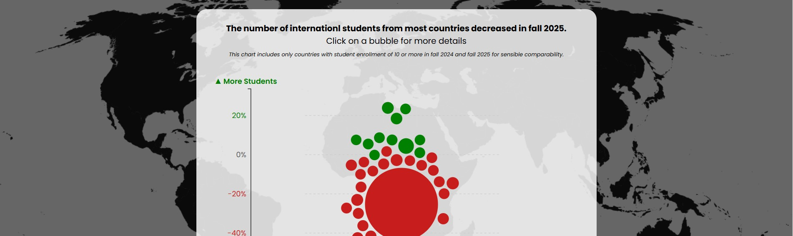
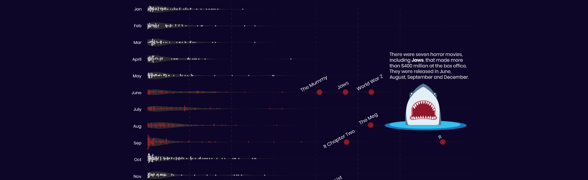
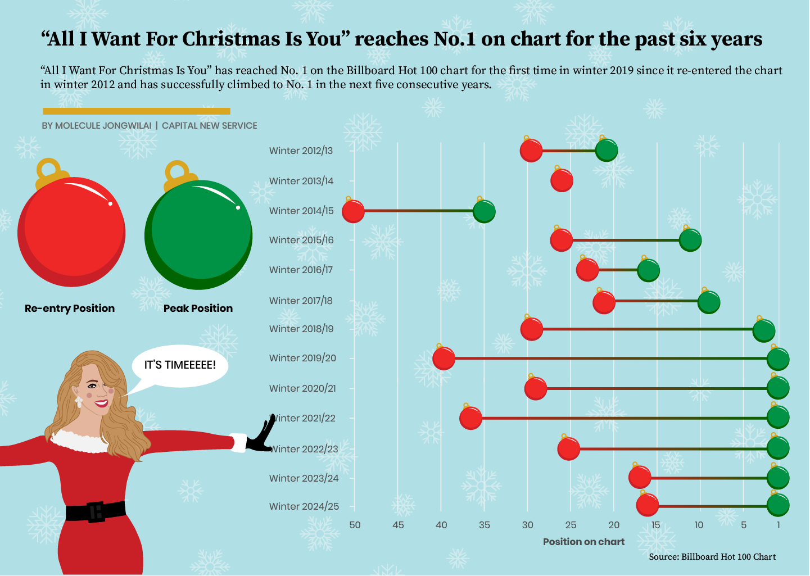
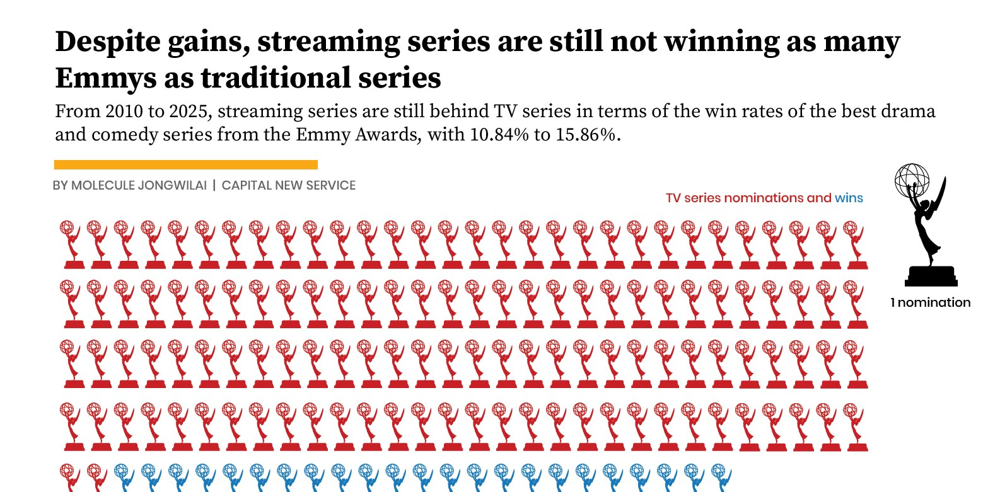
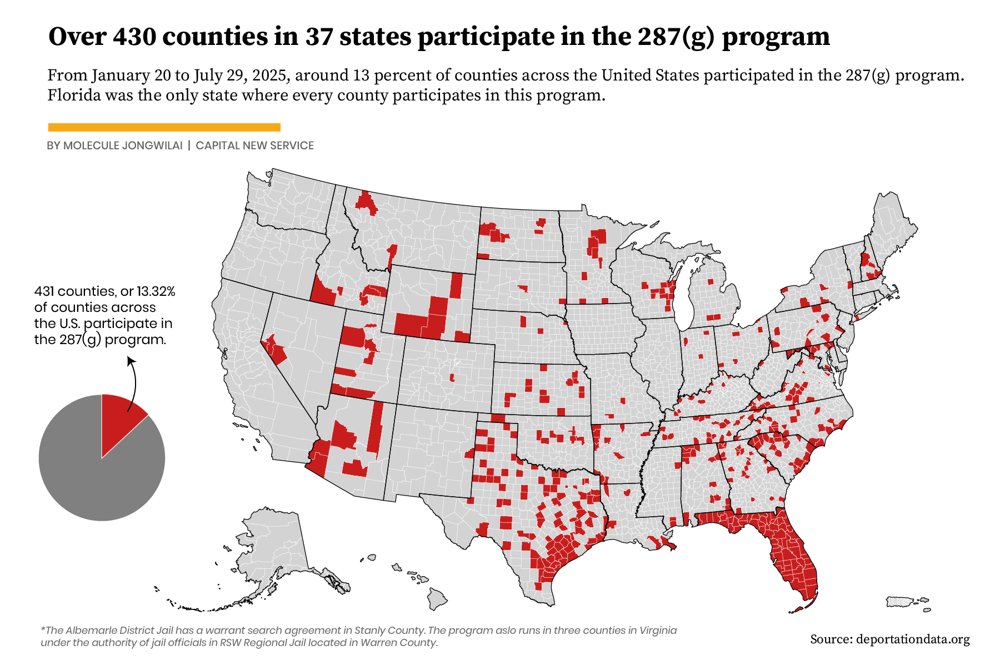
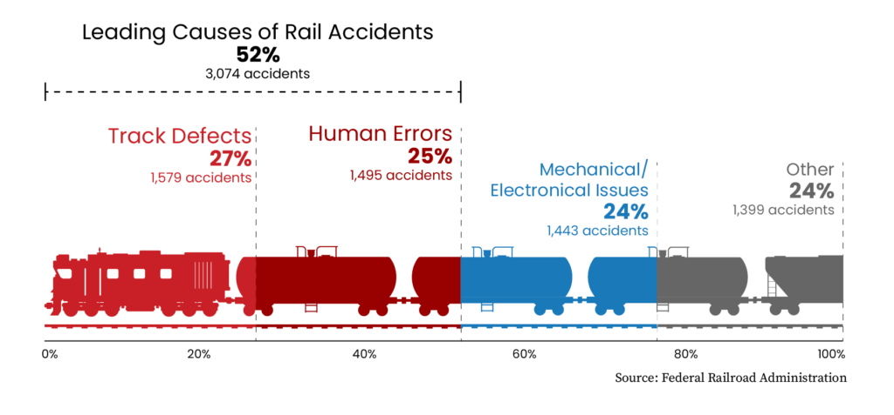
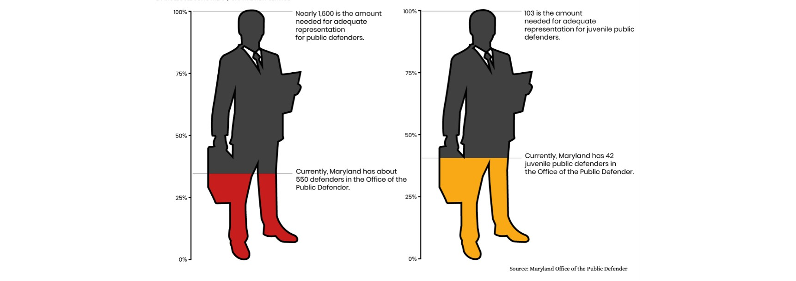

I use data, design, and code to turn complex information into stories people can understand.
Analyzed datasets, designed graphics, and developed story angles for data-driven reporting on politics, education, and culture.
Designed and built interactive visual stories using scrolling web formats.
Conducted in-depth research, fact-checked story drafts, and produced social media content to report on rail safety issues, including a controversial definition of a high-hazard flammable train, first responders' preparedness for rail accidents, and the mechanisms of train safety regulation.
Investigated and analyzed large datasets to produce data-driven projects on Thailand’s politics, economy, social issues, education, health, and environment.
Collaborated with designers and developers to deliver interactive, reader-focused storytelling formats.
Managed cross-functional teams and coordinated with external partners, including research institutions, NGOs, and media organizations.
Analyzed datasets supporting coverage of international affairs and public policy.
Data & Analysis: RExcelSQL
Visualization & Design FlourishDatawrapperIllustratorPhotoshop
Multimedia Premiere ProAfter Effects
Web: HTMLCSSJavaScript
Reporting: Interviewingnews writingeditingfact-checking
Languages: Thai (Native)English (TOEFL iBT: 106/120)
Master’s in Journalism (Data and Computational Journalism Focus),
University of Maryland-College Park | 2024 - 2026
Bachelor’s in Communication Arts (Journalism Focus),
Chulalongkorn University, Bangkok, Thailand | 2015 - 2019
SPJ Mark of Excellence Awards (Regional) – Finalist in Multimedia category and Winner in Data Visualization Category (2026)
Fulbright Thai Graduate Scholarship (2024)
Pulitzer Center Rainforest Journalism Fund Grantee (2024)
Thai Media Fund – Media Innovation Award (2021)
First-Class Honors with Medal of Excellence, Chulalongkorn University (2019)
Click each card to view the full story

Crackdown on international students continues
Byline: Story by Sophia da Silva, Data and Web Design by Molecule Jongwilai
Role:
Spooky season isn’t just in October: Examining the data around horror movies
Byline: Molecule Jongwilai
Role:
Mariah Carey’s “All I Want for Christmas Is You” Continues to Define the Christmas Season
Byline: Molecule Jongwilai
Role:
Emmys data shows streaming series have gradually dominated spots for the two biggest awards of the night
Byline: Molecule Jongwilai
Role:
Maryland’s surprising role in implementing Trump’s immigration agenda
Byline: Aline Behar Kado, Haley Parsley, and Raphael Romero Ruiz
Role:
Railroads and regulators thwart safety fixes for years, costing lives
Byline: Cat Murphy, Haley Parsley, Josephine Johnson, and Molecule Jongwilai
Role:
Maryland public defender’s office has less than a third of the lawyers it needs
Byline: Lillian Glaros
Role:SGA student body president shares her journey to current role
Byline: Molecule Jongwilai
Role:Participants reflect on the importance of diversity at UMD event
Byline: Molecule Jongwilai
Role: